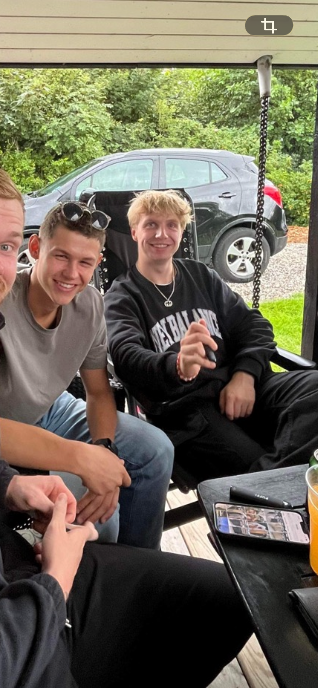
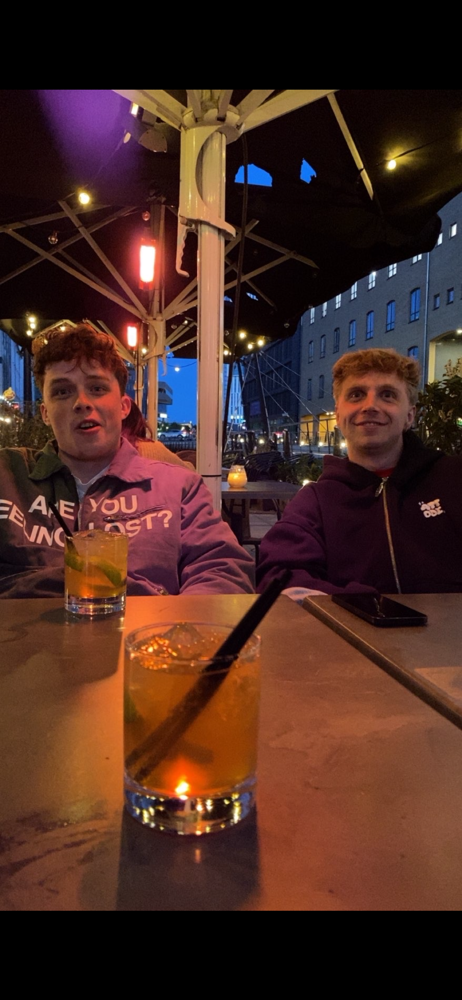
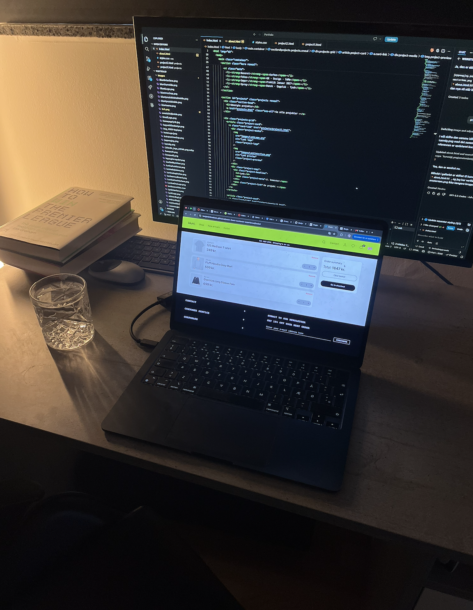

Benjamin Høgedal
Jeg er multimediedesigner studerende på erhvervsakademi i Aarhus

Min arbejdstilgang
Jeg er nysgerrig og kreativ og motiveres af at udvikle løsninger, der både fungerer visuelt og giver mening for brugeren. Jeg synes, det er spændende at tage en idé fra de første tanker og skitser til et færdigt resultat, hvor både design, funktionalitet og brugeroplevelse spiller sammen.
Jeg arbejder struktureret og går op i detaljerne, men synes samtidig, at de bedste idéer ofte opstår gennem samarbejde og sparring. Jeg er åben over for feedback, tager gerne ansvar og trives med at lære nyt undervejs. For mig handler et godt projekt ikke kun om det færdige resultat, men også om processen og om hele tiden at finde en bedre løsning.
Hvem er jeg?
Jeg hedder Benjamin Vive Høgedal, 24 år, multimediedesigner studerende på erhvervsakademi i Aarhus. Jeg arbejder både med webdesign, UX og indhold til sociale medier. For mig handler det ikke om at lave "flotte hjemmesider", men om at skabe løsninger med retning og formål.
Uden for studiet bruger jeg meget tid på fodbold, padel og mine venner. Fodbold fylder en stor del af min fritid, både når jeg ser kampe og følger med i alt omkring sporten. Jeg er heller ikke bleg for at tage et smut til Liverpool for at opleve en kamp på Anfield. Ellers nyder jeg de mere spontane ting - hvad enten det er en tur i byen, en omgang padel eller bare at mødes over en kop kaffe og snakke. For mig betyder det meget at være social, opleve nye ting og bruge tid med mennesker omkring mig.





Min nysgerrighed
Jeg er nysgerrig af natur og kan godt lide at udforske nye idéer, værktøjer og måder at løse ting på. Hvis jeg støder på noget, jeg ikke forstår, får jeg som regel lyst til at finde ud af, hvordan det fungerer, frem for bare at gå videre.
Det er også noget af det, jeg godt kan lide ved multimediedesign. Der er hele tiden nye muligheder at udforske, og jeg bliver motiveret af at prøve mig frem, lære undervejs og udfordre det, jeg allerede kan. For mig er det ofte nysgerrigheden, der gør, at en simpel idé udvikler sig til noget bedre.
 2018 - 2019
2022 - 2025
2026
2018 - 2019
2022 - 2025
2026